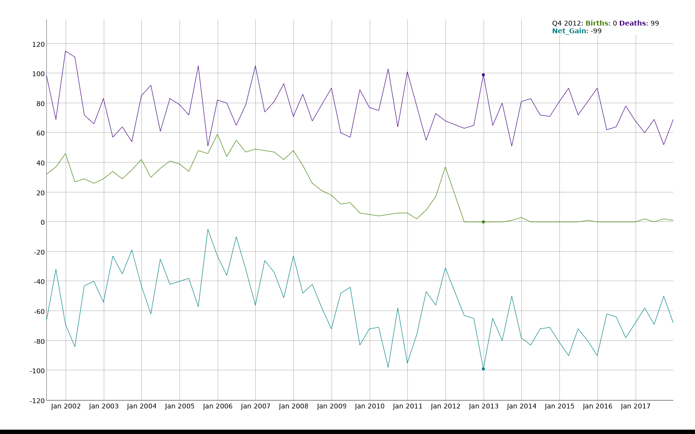

An Overview of Financial Markets and Institutions
Table of Contents
1. An Important Note on the Goal of Financial Markets and Institutions
The ultimate goal is to increase real economic growth, which lowers unemployment and improves lives through greater production. For any concept in this course there is a clear reason why it will foster economic growth. If you can't think of how a topic impacts the real economy, you want to review that topic again.
2. Financial Markets
Financial markets enable the exchange of securities for money. At any given point on time there are market participants who have excess money, and those who need money. Financial markets allow those who need money to sell securities to those with excess money. That is:
Need money: create a security and sell it for cash. Excess money: buy a security in exchange for cash.
You can think of a security as a framework of repayment. If today I have excess money I buy a security which affords me a structure of repayment convenient to my future financial needs.
There are two broad category of securities—debt and equity—and the motivation for this exchange (the reason to need cash) can vary depending on the security.
Debt Securities: These securities are formal contracts where an issuer borrows from the debt buyer. They have a maturity, and generally regular payments prior to maturity. Repayment is comprised of interest and principal payments. Examples are bonds and mortgages. Who has excess money, and who needs money in these examples?
Equity Securities: These represent ownership of a business. This gives the owner control of the business, and this is infinitely lived—there is no maturity. Repayment is a residual claim on the business's income. If there is no income, the buyer receives nothing. Stock in a company, for example TSLA, is an equity security.
Derivatives are a third type of security which derives its value from prices of the previous two types of securities, as well as on other external events. Derivatives are not used to transfer money from those who need it to those with excess, but rather derivatives allow market participants to manage taxes and risk (exposure to events). Derivatives may also be used to speculate. The existence of derivatives on an asset, however, can materially affect the value of that asset.
2.1. Free Markets
In Investements we discuss the benefits of allowing prices to fluctuate freely in financial markets. [See these notes for a reminder](https://financial-education.github.io/why_we_have_free_markets). Free markets:
- Incorporate information into prices.
- This organizes society through price signals.
2.2. Primary and Secondary Markets
A primary market is one where the security issuer is involved. For example, the Initial Public Offering (IPO) market is a primary market because the company is selling shares to investors (investors receive equity and the company received cash). Another example is US Treasury auctions of bonds. You can view the results of these auctions here.
A secondary market is one where the issuer of the security is not involved. For example, if you buy NVDA stock today in the stock market, you are buying it from another person who owns NVDA. This is a secondary market transaction. Note I am using stock market as a short-hand for the National Market System (or NMS). Similarly, if you buy Bitcoin on the Coinbase exchange, this is a secondary market transaction.
Why the distinction? We make a distinction because these markets operate very differently and there are different market participants. Think of the difficulty of determining an IPO price—this takes unique skills and methods.
Do Companies Care what their stock price is on the Secondary Market? Absolutely, for a number of reasons:
- Management performance is evaluated buy how the stock has done.
- New primary market sales of stock are done near the present stock price in the secondary market.
2.3. Money and Capital Markets
Money markets are markets for securities which behave roughly like money. Specifically, a money market security is a debt security with a maturity of one year or less. Remembering our intro economics, money is anything that (1) is a medium of exchange, (2) and a store of value. Short-term debt securities, such as T-bills, meet both criteria. Some examples of money-market securities are:
- T-Bills
- Commercial Paper
- Negotiable Certificates of Deposit
- Eurodollar
Capital markets are those markets where securities issued for capital investments are traded. A capital investment is a long-term investment such as in plant and equipment. So capital market securities are defined to be equity securities, and debt securities with a maturity greater than 1 year. Some examples of capital-market securities are:
- Stock
- Corporate Bonds
- Treasury Notes/Bonds
- Asset-Backed (such as by mortgages) Securities
Why the distinction? We make a distinction between these markets because the participants are different, and different factors are taken into account when valuing these securities. For example, money-market mutual funds specialize in buying money market securities. However stock/bond mutual funds, hedge funds, pension funds specialize in buying capital market securities. Moreover when deciding to buy a money market security we only care about the firm's ability to remain solvent over the short-run, so we are interested in measures such as the current or quick ratios. Alternatively, capital market investors care about a firms growth prospects and solvency over years and decades, and thus consider measures such as ROA, and the debt-to-equity ratio.
2.3.1. A note on the use of money vs capital
Broadly if someone says they need capital they mean a long-term investment (> 1 year) which is used to finance long-term assets. If they need money it is a short-term investment.
2.4. Market Efficiency
Market Efficiency is a statement about the (1) speed and (2) accuracy with which information is incorporated into prices. Evidence supports that all public information is quickly and accurately incorporated into prices. That is, markets are now very efficient.
What does market efficiency not mean? It doesn't mean the market will never crash—if new information is revealed the market can decline rapidly.
2.5. Liquidity
Liquidity is generally defined as the (1) speed at which you can sell an asset for cash (2) without discounting its value. There is also an equivalent but more investments focused definition: the amount you can buy or sell without significantly increasing or decreasing the price.
2.6. Regulation of Financial Markets
Markets are legal frameworks. If the framework fosters more investment, then more firms may attract funding and this increases real asset construction and real economic growth. Therefore much of the laws and regulations surrounding financial markets are made to attract investors (which attracts those who need money/capital).
What general principles foster investment:
- Transparency. Financial regulations and accounting rules which reduce the information asymmetry between corporate managers and investors.
- Good and fair legal system which enforced contracts.
- Uniform enforcement of regulations.
2.6.1. Regulatory Agencies
- The SEC regulates stock and bond markets.
The CFTC regulates commodities markets.
Note regulatory agencies don't ensure you make good investment decisions, only that the decisions you make are based on trustworthy information, and the contracts you enter into will be enforced.
2.7. Financial Markets and Globalization
We won't cover financial markets abroad much in this course for a number of reasons. Firstly, the US is the most important market for raising capital—entrepreneurs from around the globe come to the US to finance their business. Secondly, as capital can more easily flow between markets, these markets become more correlated. So there is little benefit from interacting in foreign financial markets (they are correlated with the US market).
3. Financial Institutions
Say you are going to attempt to raise capital by yourself for your wind energy generation business. What problems will you face?
- Who is interested in providing capital? Your time is spent understanding the wind energy business, and don't know who has available capital.
- Of those who are interested in making capital investments, what is their desired risk level?
- You have to convey your creditworthiness to the potential lenders/investors.
- You have to find a price which will sell enough securities to meet your capital needs.
- You will likely have to break the securities across multiple buyers.
We may split financial institutions into two categories depending on how they finance their assets. Depository institutions finance assets largely through accepting deposits. Roughly 80% of a banks assets can be financed through deposit accounts.
Below is a plot of Deposits to Assets by Bank Size Decile. Note larger banks tend to use less deposit financing, and that the proportion of deposit financing varies over time (is it affected by changes in interest rates?). The range of Deposits to Assets over the entire dataset is roughly from 74% to 90%.
Figure 1: Calculated using FDIC Call Reports (FDIC SDI data)
Alternatively, non-depository institutions finance assets through security sales, insurance payments, or other sources, though not through deposits. We make a distinction between these two types of institutions because depository institutions handle public money, and are therefore more highly regulated.
3.1. Depository Institutions
Depository institutions offer deposit accounts to the public and generally use the money in these accounts to fund long-term loans. Salient aspects of this service are:
- Deposit accounts can be of any size (often small), and these funds are packaged together to make large loans.
- They aggregate these short-term deposits and provide long-term loans of any size.
- They evaluate the default probability of the loans they provide—the depositors don't have to.
- They don't pass on the loss on a loan to the depositors (though if the bank fails the depositors could experience losses).
- They offer many loans so they provide depositors diversification.
Note, to depository institutions, deposits are liabilities and the loans they offer are assets.
Also note, depository institutions can be members of the Federal Reserve system.
3.1.1. Commercial Banks
Accepts deposits and makes loans, often to large businesses. Bank of America, and JP Morgan are examples of large Commercial banks. Many commercial banks are members of the Federal Reserve System and therefore have access to the federal funds market, where they can borrow or lend (to meet reserve requirements or earn interest on excess funds).
3.1.2. Savings and Loans (S&L) / Thrifts
Accepts deposits and offers mainly residential mortgage loans. Often also offers other types of mortagage and auto loans to consumers.
3.1.3. Credit Unions
The main difference between credit unions and S&L is that credit unions are non-profit, and therefore have preferential tax treatment. However, credit unions have to restrict membership (who can make deposits) to a group with a common bond, such as a common employer.
3.2. Non-Depository Institutions
As the name implies, these institutions obtain funding through other means than offering deposits. These firms do not have access to the Federal Reserve System.
3.2.1. Insurance Companies
Insurance companies are funded through premium paid for insuring cars, etc. They invest the funds in stocks and bonds.
3.2.2. Pension Funds
Pension funds provide defined benefit payments to retirees. To do so they receive regular payments from workers, and invest this money in stocks and bonds. When the worker retires the fund uses these stock and bond payments to provide the defined benefits. Because workers often have decades before they retire, pension funds invest in long-term securities.
3.2.3. Mutual Funds
Mutual funds sell shares in the fund and invest the proceeds in securities. Commonly mutual funds invest in:
- Stock
- Bonds
- Money market securities
3.2.4. Finance Companies
Finance companies sell securities (stock and bonds) and use the proceeds tp lend to consumers and businesses. Examples are Ford Motor Credit and American Express.
3.2.5. Securities Firms
These firms provide many services generally referred to as investment banking. For example they may:
- Underwrite securities
- Serve as an advisor on transactions
- Function as a dealer in markets.
Many of the above non-depository financial institutions serve an important function as monitors of publicly traded firms. This is because they are often blockholders—they own large (> 10%) portions of a firm's stock.
Consolidation among financial institutions See the graph of change in the number of financial institutions here below. The number of FDIC insured institutions has declined consistently since the 1990s. A major reason is the removal of a restriction on interstate banking, and a resulting industry consolidation.

Figure 2: Change in the number of banks
Programming Exercise: Use the /summary call from the BankFind API here to find the total number of FDIC institutions by quarter.